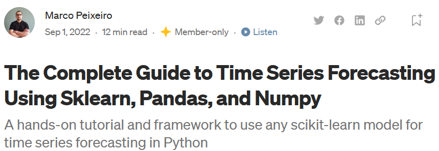
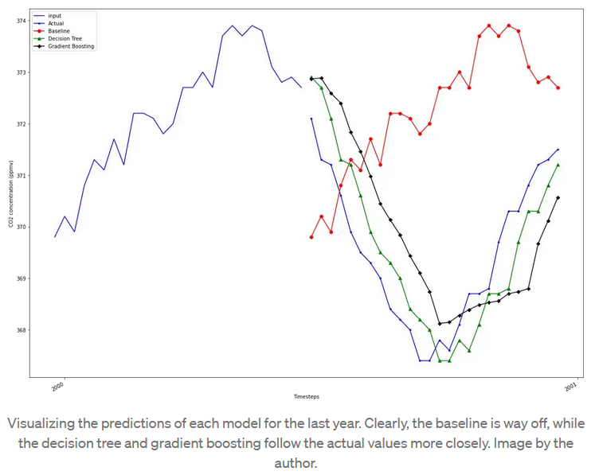
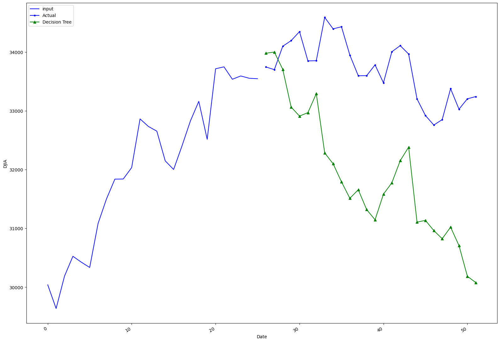
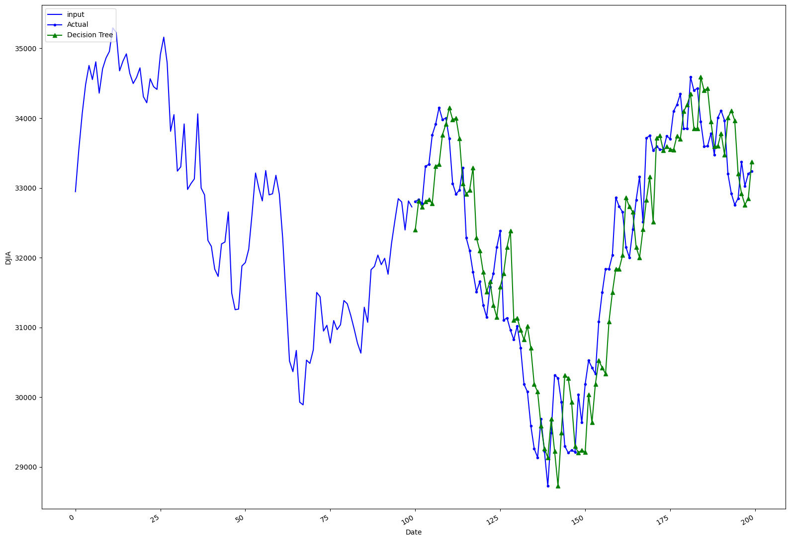
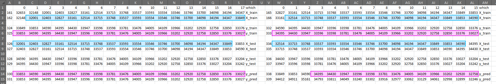
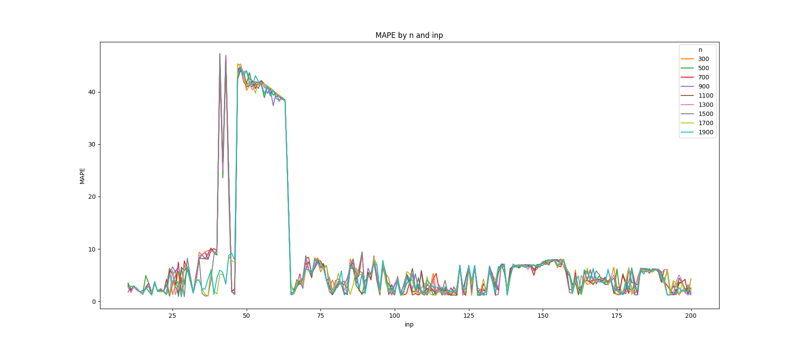

A popular online tutorial provides a seemingly easy and straight-forward strategy to forecast time series data. However, we believe, it is flawed. His models know future data and thus are able to perform really well, too well. Beyond this specific application, this points at some broader issues with current machine learning and Data Science culture, which we outline at the end of this sheet. This article is based on this Github post. In this follow-up we describe one way to fix this tutorial.
Is it possible to accurately predict future stock performance based on past performance using simple machine learning algorithms?
Recently we found this promising article: "The Complete Guide to Time Series Forecasting Using Sklearn, Pandas, and Numpy" The author apparently has thousands of followers and telling from the "claps", he received for this article, it appears fairly popular.

After a few steps, the guide ends with a plot which shows a great accuracy in predicting CO² concentration in the atmosphere using the DecisionTreeRegressor algorithm from sklearn.

Wow! It nearly looks like it is exactly correct, just two steps behind...
Replication
If we could have such a great prediction for our stock data, we will be rich in no time, we thought. Said, done, we got daily data for the DowJones from here and adapted his code. First, we got rid of all his introductory stuff, heading straight to boundless wealth. After reading in our data and cropping it to increase speed, we copied his functions, kept his prediction window and ran the model.
Oh...this is disappointing. It got the direction correctly but his seemed way better. Well, Stock data may be something different... But let´s give it one more try with a different input and prediction window.
Wow! Now this is something, we are just two days behind the performance of the Dow Jones!
The Puzzle
Ok... As you might have guessed by now, this is simply wrong. No one can predict stock data that accurately. So, what is going on here?Well, in the comments section, some have expressed concerns that "The reason those models look good is that they've snooped on future data and learned from it!". However, the author insists, that "The model doesn't train on future values!". Although he later admits, that he does not actually predict 26 steps at once, like his diagram implies, but only one a time (We believe that this is also not entirely correct, but let´s put that aside for the moment). Anyway, it still looks like a suspiciously great - simply a lagged - prediction.
If one runs his code with several setups of prediction lengths and dataset rows, strangely, one gets some predictions that closely follow the actual data with a lag of two (like our second trial), three or five steps but some that are completely off (like our first try above).
So does his model really "snoop on future data"? An obvious way to check that, is to simply see which data the model trains on and which data it predicts. we exported these sets to csv-Files.
Now how do we get any insights regarding the question, whether the data knows the future beforehand or not? In his code, he "reserves" the last two rows for testing. The following illustration limits the X_train, the y_train, the X_test, the y_test and the y_pred data frames his code produces to the last two rows of (the latter three only have two rows). Now we can take a closer look.

At first glance there is no obvious relationship between these rows but if one looks closely, there is some kind of repeating pattern.It turns out that, within the X_train data, the model already receives exactly that sequence of numbers we later ask it to predict (blue box). It also gets to know what outcome (y_train) this input produces (upper pink box), which is exactly the sequence it outputs when asked to make predictions (lower pink box).
So, from our point of view, the data *did* "snoop" on future data, which is why it can make such accurate predictions.
Why are some predictions a lag of two/three/five and other completely off track?
As we have seen by now, only some setups of data size and steps to predict yield a lagged prediction. To illustrate this point, we ran our code with a combination of several setups, always computing the MAPE, using his function from above, as this value may be an indicator of a lagged - better, low MAPE - prediction.
This is ... interesting. We can see that it depends both on the size of the data set and the horizon we want the model to predict. For the example above, we can see the difference between 16, displaying a high green peak left to the "25" tick on the x-axis and 18, the deep valley right afterwards.
We can also see, that most of the time, n is less relevant than the input and prediction horizon for the test data. Interesting is also that for all numbers of n except for the those with the greatest value (1700 and 1900) there is a peak at the inp parameters 41 to 44. All lines reach a plateau between 47 and 64 and sharply drop afterwards. If one looks closer into the models at this part, it seems that the prediction is repeating most of the test input horizon, which, more or less accidentally produces high MAPE (if the Dow had had a flat graph during that time it would be a perfect strategy).
Apart from describing what is happening here, we would like to know *why* it is happening. Again, we have to admit, we have no idea. Again, if somebody has a better understanding of what is going on, we are happy to hear from you. However, it seems to us that such a strange pattern is yet another indicator, that the research strategy suggested in this article is not ideal - to put it mildly.
Summary and Conclusion
The article mentioned at the beginning suggested an easy and straight-forward approach to using "any scikit-learn model" for time series forecasting. we demonstrated in this review why we believe it is flawed. The main critic being, that its prediction using DecisionTreeRegressor is simply a lagged version of the actual data. This is likely caused by partial inclusion of test data as training data. Some other strange outcomes are produced by this analytic strategy. However, we am not completely sure about their causes.
So, why bother? If this strategy for time series forecasting does not work, simply use others which do, right? Well, we believe there is more to learn from this than how to set up an analytic strategy for this particular purpose.
Know your data
Knowing your data is essential for meaningful insights. Often, "getting to know the data" means looking at the first five and last five rows and probably some summary statistics. This is a good start, but during the project, data is manipulated, aggregated, interpolated, lagged, and so on. Although most of these tasks usually work as expected, it would not hurt to take a look at the data, preferably at more than ten rows, whether everything is still correct.
Basically: Know your data. Not only at the beginning but throughout your workflow. Not only the first 5 rows, but also what happens where in your data.
Be critical
Data Scientists, just like any scientist, try to describe phenomena, detect relationships, make predictions. To put it more general and pathetic: Explaining the world around us. But this world is complex and our data usually covers only a tiny fraction of the environment we want to explain.
Therefore, when drawing conclusions, one should always ask: Are there alternative explanations? Is our result valid? Is it reliable (reproducible) for similar contexts? And even if the answer is favorable, being humble in your claims and keeping in mind that others might have reasonable critics and "comments" is always a good advice.
In that sense:
If we are completely mistaken here and there is in fact nothing wrong with the analysis
we criticised in this sheet, please let us know,
we would love to understand the issue in more detail.


Georgia Reader Reply
Great!